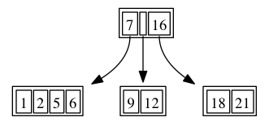
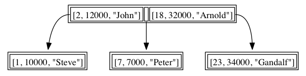
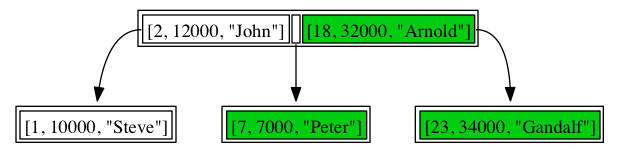

Let's get a deeper understanding of how MongoDB looks up data when you issue it a query. Let's imagine a collection that contains 100 documents of the type {a:i} where i = [0 to 100]. We issue a search to the server using {a:5}. Think of all the documents as being on a chain, one connected to the next.

Now when the query gets executes MongoDB will start from the top of the chain and check each document to see if it matches a equals 5. If it does match it will add it to the result set otherwise it will skip to the next document. This is what is known as a table scan in the database world. If you imagine the chain containing millions of documents you can see that this is not a very efficient way of querying data as we would have to check each document for each query meaning a lot of reading data from disk. Thus a better approach to searching is needed and this is where the concept of an index comes in.
Index Magic
Now indexes are not truly magic and once you grasp the main concept you'll wonder why you never thought of them yourself. The main index used in MongoDB is what's called a BTree index (or more specifically a variation of a BTree+ index).
So let's get into what a BTree index is. In very short it's a way to keep a list of values in a sorted order that's a tree structure and not a chain. What do you mean you might ask. Well it's easier to illustrate than explain.
The tree above is an index for the field a in the documents above. Notice how it's a tree structure, instead of a chained list of documents. Each level of the tree contains a set of id's that correspond to a value that is stored in the a field in a document. So say we need to find the document with the value a equals 5. We grab the top node where we find the the first value to be 7. We know our value is less than 7 so we decent into the left node of the tree and scan from left to right until we find the value 5 and we can now return the correct document. So instead of having to scan all documents we can short-cut our search because we have split the search space into smaller chunks of data to search through. So in this case given that we know that a is less than 7 we only need to search through the documents that are larger than 0 and less than 7 which are all contained in the left lower node.

The main benefit comes from when our collections of documents grow very big as it allows MongoDB to limit the number of documents it needs to search through to find the correct matches to the query, thus speeding up the search massively compared to searching through all of the documents.
An index like this lets us look up a document by an indexed value very quickly but it also lets us do what is called a ranged query. A ranged query is a query that looks like this in mongodb {a:{$gt:0, $lt:10}}. This looks for all documents where a is greater than 0 and less than 10. Because of the way the Btree index is structured it helps us limit the amount of documents we need to search as as can see from the first node that we only have to search the leftmost and middle node for all values that are less than 10. So we only need to search the results

This is of course a very oversimplified way of explaining the way an index works but safe to say is that it allows you to search more efficiently for a value.
The last item we will cover is what's called a compound index and a beneficial side effect of compound indexes called covered indexes.
Compound indexes
Besides support a single value index MongoDB also supports what's called a compound index. This type of index is made up of multiple values. Let's take an example of documents that look like this.
{ pid: 1, name: 'Steve', salary: 10000 } { pid: 2, name: 'John', salary: 12000 } { pid: 7, name: 'Peter', salary: 7000 } { pid: 18, name: 'Arnold', salary: 32000 } { pid: 23, name: 'Gandalf', salary: 34000 }
What if we want to efficiently search for documents where pid is larger than 2 and the salary is less than 10000. This is where a compound index comes in and allows us to do this efficiently. Compound means to combine and that what it is, an index that combines two or more fields. Let's look at an example of a compound index of {pid, salary, name}.
Now let's run our query against it. The first part of the query is the pid factor, so let's locate all the pids larger than 2
As you can see we have identified 3 nodes (colored green) that fulfill the the criteria of pid larger than 2. It's time to apply the second criteria to this new sub tree of results. Inside of the green nodes we locate the ones where salary is less than 10000

This is awesome, we can use a single index to narrow down the number of documents we need to search to locate the values in the query even if the query covers two or more fields. This brings us to the last aspect of compound indexes, namely covered indexes. Given that the data for pid, salary, name is already in the index we can retrieve the data directly from the index if the query only requires the fields in the index to be returned. This means we will not have to load the actual documents into memory to satisfy a query.
This covers the basics of how indexes work. We have not covered geo indexes or text indexes here on purpose as we will cover them in future exercises. Hopefully this introduction will be enough for you to grasp why indexes are one of the most important aspects of MongoDB and that they are vital to get maximum performance out your queries.